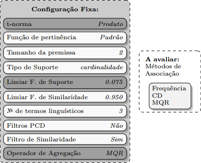
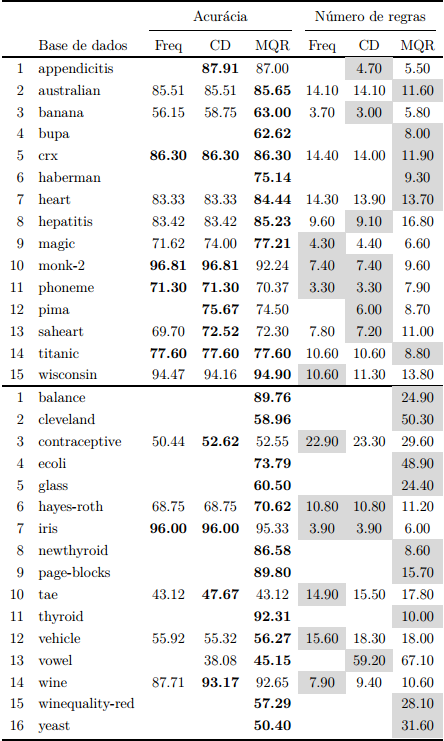
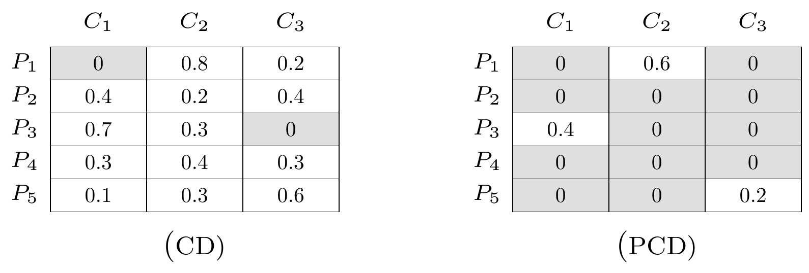
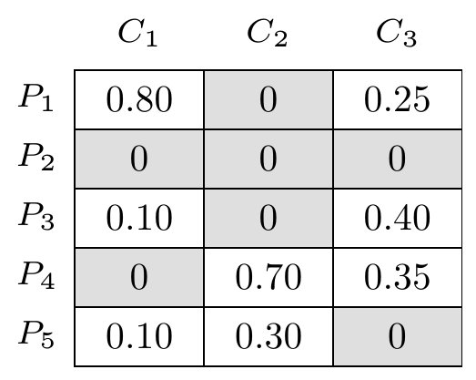

Métodos de Associação


Comentários
O método de Associacao MQR foi o único que conseguio resultados para todas as bases de dados.
O CD sofreu mais no caso das bases de múltiplas classes.
A Frequência foi o método que conseguio menos resultados para as bases de dados.
CD

MQR
